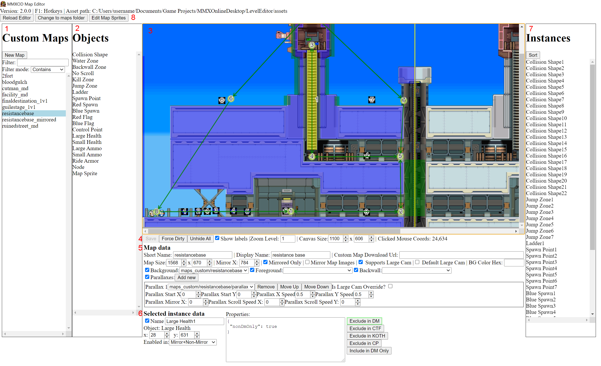

Welcome to the custom map modding scene for MMXOD! Here you will learn how to use the map editor tool. Previously this was used only by Gamemaker19 to develop the game, but was released to the public to allow others to create their own custom maps, and share them with the public in a self-contained package.
Download the editor from the Tools section of the site, and then unzip it. Note that right now, this program is only for Windows. Run "MMXOD Map Editor.bat" in the program folder, this will launch the map editor. Follow the prompt to select an assets folder where the program will read/write map files. Afterwards, the program will load all maps for editing. If you need to change it, edit the assetPath string in the "config.json" file that gets generated in the program folder (be sure to use forward slashes in the path), or simply delete config.json and re-run the program to select a new path in the UI.
config.json is the settings file with all persistent settings that the program uses that gets saved to disk, and you can put it in a Documents folder called "MMXOD Editor" to have the program look there instead of the program folder on startup. Otherwise you will have to copy-paste it over every time the editor gets a new update.
In MMXOD, custom maps are stored in the "assets\maps_custom" folder. This is both where you do custom map editing and where you install custom maps downloaded from the internet.
A custom map is represented by a top-level folder in the "assets\maps_custom" folder which encompasses all the map data in one self-contained package. A custom map should never have any dependencies on files outside this folder. This allows you to zip up the map folder and provide it for others to easily download and install without additional steps. The folder name must always match the map name and if renamed will cause errors. Inside the folder, there are several different possible files:
The "assets\maps" folder has the game's official maps. In general the format is similar, but with a few differences, such as music, map sprites and some map images being part of the shared game package (i.e. in assets/maps_shared or elsewhere). The editor does let you mod official maps, but any changes to them will change the game's checksum version, forcing others to download your same edits to play with games you host online.
Here's an overview of the high level UI sections of the map editor.
This section contains the list of maps and allows you add, change and filter maps.
This section contains the list of objects, which are the templates or blueprints of things that you can place on the map. Objects are the basic building block of MMXOD maps. Instances are the instances of objects that are on the map. To place an object on the map, select a specific object in this list, then click on the Map Canvas (#3) to place it at your mouse position. There are two categories of objects: Shape objects and non-shape objects. Shape objects are represented by a collision shape (a set of points) on the Map Canvas and can be resized. Non-shape objects represent an entity at a specific position that can't be resized. For more details on objects and their properties, see the Objects section later on in this guide.
This canvas visually shows the map and allows you to select and manipulate instances. Click on an instance and to select it, and drag to move it. Drag select is also supported to select multiple instances, though the list of actions that apply to multiple instances at once is limited to bulk move, delete, resize, and a few others. Press the Delete button with one or more instances selected to delete them. If instances are on top of one another, to select the instances further down, hold down CTRL and click again to cycle downwards until you reach the one below.
Contains map actions/tools/settings:
Contains the top-level data fields of the map representing map data that the game engine reads from/uses, that are saved to disk when you save the map:
This section is only populated if an instance is selected. It shows all the data fields configured for that instance.
A list of all instances in the map. You can select and delete instances here, not just on the map canvas. They are sorted by their object type. Instances that are off-screen will be highlighted red as an indication that they should be deleted (most of the time).
This toolbar at the top allows you to:
Generally you'll follow these set of steps to create and edit maps:
Now that you've got a basic overview of the interface and map creation flow, read this section to understand the various object types and their properties.
The most important object. Defines collision boundaries for your map. With a collision shape (or any shape object instance) selected, press TAB to open the vertex editor, where you can drag-move vertices horizontally or vertically to create slopes. You can also delete a shape point in the selected instance data section to turn the shape into a triangle, but you can't delete more than one point, nor can you have shapes with more than 4 vertices. You can press E with a collision shape selected to have the program attempt to snap vertices to nearby collision shapes and align them.
| Property | Possible Values | Description |
|---|---|---|
| Boundary | true | Indicates that a wall represents a vertical level boundary, typically used for the leftmost and rightmost walls in a map. It will enlarge the top points of the wall to an extremely high value making jumping over it virtually impossible. It has the same effect as unclimbable so you don't need to set unclimbable as well. |
| Unclimbable | true | Indicates that this wall cannot be climbed. |
| Pit Wall | true | Indicates that this wall is a side of a bottomless pit. It adds an unclimbable section on the bottom, which prevents players from camping too low in pit walls and also prevents players from going straight through the pit walls without requiring map creators to set the bottom points of the wall to an extremely low value. |
| Slippery | true | Set to true to make a wall slippery, like ice. Currently only used by frozentown. |
| Top Wall | true | Set to true to indicate that this wall is a boundary blocking the top of the map, typically used in outdoor areas. This prevents ceiling abilities (i.e. Hyoroga) on said wall, so characters don't appear to be hanging onto nothing. |
| Move X | A number > 0 | Set to a number that indicates the speed at which to push enemies standing on this wall (in units of pixels per second). Can be used for conveyer belts such as in factory 1v1. |
Defines underwater areas of the map. Fairly self explanatory. As of right now it won't draw any transparent water in-game, so you'll have to manually add foreground images to do that.
Defines areas on the map where Sting Chameleon can climb. If using backwall images, should correspond with those. Please don't forget to add this to your custom maps. Don't neglect Sting Chameleon!
| Property | Possible Values | Description |
|---|---|---|
| Is Exclusion | true | You can put backwalls on top of other backwalls and indicate that the backwall shape is meant to be a gap in the backwall, like a hole/window. This can significantly save on the number of backwalls you have to put in certain parts of the map. |
Defines areas on the map where the camera is not allowed to scroll. If the camera ends up in these regions, it will either snap out immediately or next time the camera is moved, depending on the properties set on the instance. No scrolls are quite complex and painful to deal with and even detrimental to gameplay so it's best to avoid custom maps with no scroll zones unless you're really trying hard to create an authentic map from a real game. Tip: press B on the map canvas to visualize the in-game screen size to help you place No Scrolls properly.
| Property | Possible Values | Description |
|---|---|---|
| Free Dir | left, right, up, down | Specify the direction to free the camera if it ends up in this No Scroll zone. This is required. |
| Snap | true | If set, the camera will snap out immediately if it ends up in this No Scroll. Typically this is used for diagonal No Scroll zones in maps like Forest and Gallery. A lot of old maps still set this option, but generally new maps should favor not setting it unless necessary. |
Defines areas on the map where players will be immediately killed. Good for spikes, lava and bottomless pits that aren't located at the bottom of the map height.
New to v3, you can configure kill zones as hurt zones, only dealing damage instead of killing outright. See the new properties for more details.
| Property | Possible Values | Description |
|---|---|---|
| Kill Invuln | true | If set, kill the player even if they are invisible (cloaked). Should only be set for pit kill zones. |
| Override Damage | Number > 0 | If set, indicates that this is not a true kill zone but a hurt zone, merely damaging enemies touching it by the amount of damage entered. |
| Flinch? | true | If override damage is set, turn this on to make the hurt zone flinch players on damage. |
| Hit Cooldown | A number > 0 | If override damage is set, turn this on to set a hit cooldown in seconds. (This is the cooldown between each application of damage, so for example a value of 1 indicates to only damage players every second they stand in the zone). Avoid 0 or very low numbers. 0.5 or 1 (half a second or a second)is usually a good number. |
Defines areas on the map where bots will be forced to constantly jump if colliding with the zone.
| Property | Possible Values | Description |
|---|---|---|
| Force Dir | left, right | Direction to force the AI to move when in this jump zone. Useful for pit walls. |
Defines areas on the map that are climbable ladders. You don't need, and shouldn't put a wall on top, the game engine will do it automatically. However, if applicable ladders should be surrounded by walls with the same top line Y position as the ladder's.
The most important non-shape object. Defines where players can spawn. Every map needs at least 4 of these. They need to be on top of a wall or you'll get a glitchy spawn point.
| Property | Possible Values | Description |
|---|---|---|
| Flip X | true | If set, indicates to spawn the player facing left instead of right. |
| Race Start Spawn | true | Only to be used in Race maps. If set, indicates that this is a race starting spawn position. Race maps need at least 10 of these and they should typically be placed in the left side of the map. |
Non-neutral spawn points used in objective-based team modes only. Note that if not set, red spawns will automatically have Flip X set to true. Maps in general should have blue on the left, red on the right.
Both are needed for CTF mode/large maps. You should put a node on top of the flag so the AI can pick it up.
This represents either a hill (KOTH mode) or a control point (CP mode). The presence of these with the right properties indicates to the game that your map supports KOTH and/or CP. You should put a node on top of the point so the AI can capture it.
| Property | Possible Values | Description |
|---|---|---|
| CP Num | 1, 2 | Needed for CP mode. Specifies if this is the first point or the second point (the second point can't be captured until after the first one is). |
| Hill | true | Needed for KOTH mode. Indicates that this is a hill in KOTH modes. You can reuse the same hill as a control point in CP. |
These four objects represent capsule pickup spawn points.
| Property | Possible Values | Description |
|---|---|---|
| Exclude in DM | true | Pickup should not be in deathmatch mode. |
| Exclude in CTF | true | Pickup should not be in ctf mode. |
| Exclude in CP | true | Pickup should not be in cp mode. |
| Exclude in KOTH | true | Pickup should not be in koth mode. |
| Include in DM Only | true | Pickup should only be in deathmatch mode. Don't set both this and any of the ones above at once. |
A neutral ride armor spawn point. It supports the same properties as ammo pickups and spawn points, in addition to a Type property.
| Property | Possible Values | Description |
|---|---|---|
| Type | n, k, h, f | Type of ride armor. N=normal,K=kangaroo,H=hawk,F=frog |
Represents a map sprite, a sprite that is shown on the map in the background. Map sprites can also be destructable.
| Property | Possible Values | Description |
|---|---|---|
| Sprite Name | Custom map sprite name | Required. Name of sprite in your custom map's sprites folder to use for this map sprite. When making the map sprite, don't forget to set the sprite wrap mode as loop if it's a looping animation (which it probably will be if it's a map sprite). |
| Repeat X/Y | Any positive integer | A shorthand way to create a grid of map sprites. Represents the number of columns/rows, respectively. |
| Repeat X/Y Padding | Any positive integer | Only to be set if Repeat X/Y are set, respectively. The amount of space between rows/columns in the grid of map sprites. |
| Z Index | aboveForeground, aboveInstances, aboveBackground, aboveBackwall, aboveParallax |
aboveForeground: Draws map sprite above foreground layer. aboveInstances: Draws map sprite above instances layer. aboveBackground: Draws map sprite above background layer (default). aboveBackwall: Draws map sprite above backwall layer. aboveParallax: Draws map sprite above parallax layer. |
| Parallax Index | Any positive integer | The one-indexed index of the parallax layer at which to draw this map sprite. Setting this indicates that the map sprite is drawn in the parallax layer, and the Z-Index property above, if set, is ignored. For example if you have 2 parallaxes and want this to be drawn on the second parallax, set the index to 2. Giant Dam is currently the only user of this, to animate the background dams, but it can be useful for things like twinkling stars in a night sky parallax. |
| Flip X | true | If set, the map sprite is flipped on its X axis. |
| Do Not Mirror | true | Mirrored maps only. If set, the map sprite will not be mirrored. If applied to map sprites to the right of the mirror x, they won't be removed from the autogenerated mirrored map. |
| Destructable Flag | 1, 2, 3 | Set to 1 to indicate it's a small destructable tile (headbuttable), 2 for a large destructable (unheadbuttable) and 3 for a large destructable that can be destroyed by any weapon, not just explosive weapons. Note, the map sprite needs a global hitbox with the "trigger" option checked for it to be damageable by attacks. You can put POIs on the map sprite to indicate where to draw explosion animations when the destructable is destroyed. |
| Destructable Health | Any positive integer | If the destructable flag is set, amount of health to give the destructable. If not set, defaults to 12. |
| Destroy Instance | An instance name | Set the name of an instance here to destroy along with the destructable when it's destroyed. |
| Gib Sprite | Custom map sprite name | If the destructable flag is set, this specifies an optional sprite to use for the explosion animation "gibs" (broken pieces) after the destructable map sprite is destroyed. Each frame of the sprite indicates a separate gib and the number of frames is the number of gibs to draw. |
A "navmesh" node. This is important for bot pathfinding in large, objective-based maps. It's the most complex object by far and the only one with a relational linking system. A map with proper pathfinding consists of multiple interconnected nodes (collectively called a Navmesh) with each connection itself having certain properties. How well your bots maneuver through you map depends on your skill and effort in setting up the map's navmesh.
To link nodes, select two of them and press F. To unlink, press X. V allows you to link in one direction only, indicating that a bot can only go from the first to the second node and not the other way around.
Each link on a node is represented by a box to the right of the properties text box with the neighbor name at the top, and you can press the delete button to delete the connection. There are properties at the node top level, as well as separate ones in the box that are specific to each connection.
Top level node properties
| Property | Possible Values | Description |
|---|---|---|
| Connect To Self If Mirrored | true | Only for mirrored maps, in which it tells the mirror generation to link this node with its mirrored equivalent. This is needed to connect the left and right sides of the mirror map nav mesh. |
Node connection properties
| Property | Possible Values | Description |
|---|---|---|
| Ladder Climb Dir | up/down | If set, indicates that the neighboring node is to be reached by climbing a ladder, either up or down (configurable). |
| Wall Climb Dir | left, right | If set, indicates that the neighboring node is to be reached by continuously climbing up and pushing either left or right (configurable). |
| Platform Jump Dir | left, right | If set, indicates that the neighboring node is to be reached by jumping upwards and then pushing either left or right (configurable) when a platform is detected in that direction. This is to be used if jumping up to a floating platform where there's no wall below. Otherwise if you just use a jump zone, the bot would push left/right for too long and not make it up the platform, and go under it instead. |
| Platform Jump Dir Dist | positive number | Only for if Platform Jump Dir is set. Allows you to control the distance in which it checks for platforms. Set to a higher number if the platform is further way or else the AI might not see it or reach it. |
| Include Jump Zones | CSV string (or empty) | CSV (comma-separated values) string of jump zone instance numbers (not the full instance name). If set, the jump zones in this CSV will only be active if transitioning to this neighbor node. This isn't commonly used or needed. An example value is 1,2. An empty string means to ignore all jump zones when transitioning to this neighbor node. |
| Dash | true | Indicates to dash when transitioning to this neighbor. |
| Ladder Drop | true | Should only be put in a ladder shape, in between two nodes sandwiching a ladder. Tells bots climbing the ladder to drop from it at this point if going to the neighbor node. Currently only used by Safari Park's ladder, see that map for the rationale of this use case. |
| To Air Node | true | You need to set this if the neighbor node is in the air and not close to the ground. This is needed for vertical wall climbing node connections (quarry's left shaft has a good example of why you'd need this, so study that map's navmesh for the rationale of this use case.) |
| Moving Plat X Dist | positive number | Used for neighbors to/from moving platforms. Indicates the x distance in pixels before the AI attempts to jump from one moving platform to the next. |
Spawns Ride Chasers on the map.
| Property | Possible Values | Description |
|---|---|---|
| Checkpoint Chaser | true | If set to true, indicates that this is a Ride Chaser spawn next to a Race mode "checkpoint", which are spawn points that are not the starting race spawn points, typically placed in the middle of the map in case players die so they don't respawn at the beginning, but at the closest checkpoint reached. Place these next to checkpoints to ensure a player that respawns at a checkpoint will immediately get a Ride Chaser spawned for them, bypassing the usual Ride Chaser spawn cooldown in non-race modes. You only need one of these map objects per checkpoint. It will endlessly spawn multiple Ride Armors for everyone if players are nearby and approach it without a Ride Chaser. |
A dynamic music source. This provides a region in the map where the music can change on approaching it, much like the Sigma hyper forms, Goliath armor, etc.
| Property | Possible Values | Description |
|---|---|---|
| Music Name | Name of a music file | The name of a music file (without the extension) found in the assets/music folder or the custom map top-level folder. |
A zone on the map where players will be pushed. Giant Dam has an example of this near its propellers.
| Property | Possible Values | Description |
|---|---|---|
| Move X | A number | Amount to move in the x direction, in pixels per second/ |
| Move Y | A number | Amount to move in the y direction, in pixels per second. |
Only for Race maps where at least one is required. Gates disappear after setup period ends and are used to prevent head starts.
| Property | Possible Values | Description |
|---|---|---|
| Unclimbable | true | Set to true to make this gate unclimbable. Note, there isn't a boundary property unlike regular collision shapes. You'll have to manually set a very low top y value if you want the gate to not be easily jumped over in an outdoor gate. |
Only for Race maps where one is required. This is the goal, the finish line of the race that must be touched first to win.
| Property | Possible Values | Description |
|---|---|---|
| Mirrored Goal | true | Only in mirrored maps. Because races by convention go from left to right in the map, in mirrored maps this presents a problem for placing a goal in the right side of the map. So if your map is mirroed you MUST place a goal with this property set on the left side of the map representing the place the goal would spawn on the inverted right side of the map if mirror mode is set. IMPORTANT: if setting this you also need to set the goal to be "Mirrored Only" in the instance options or else it would spawn in non-mirrored modes as well, causing errors. NOTE: if your map supports both mirrored and non-mirrored modes, both modes need a goal, and for the non-mirrored goal, specify the goal to be "Non-Mirrored Only". |
A moving platform, used in maps like Sigma 1 and Sigma 2.
| Property | Possible Values | Description |
|---|---|---|
| Sprite Name | Custom map sprite name | Required. Name of sprite in your custom map's sprites folder to use for this moving platform. When making the map sprite, don't forget to set the sprite wrap mode as loop if it's a looping animation (which it probably will be if it's a map sprite). Also, it needs a global collision box with the "isTrigger" unchecked and hitbox type of "None". You can check isTrigger however, to make it just a moving map sprite, without collision, but this use case still requires a hitbox. |
| Move Data | Freeform Text |
Required. A CSV (comma separated value) of 3 numbers, with multiple lines. Here is an example:
0,0,2
Each line represents a waypoint in the moving platform's path. The first two numbers are the x and y offset, respectively, from the start position of the moving platform. The last number is the # of seconds to stay at this position. IMPORTANT: all moving platforms require the first row to have 0,0 as x and y so it can smoothly return to its position of origin.
|
| Move Speed | Positive integer > 0 | Speed of the moving platform in pixels per second. |
| Time Offset | Positive integer > 0 | Offset time in seconds for the moving platform before it starts moving. Use these to de-sync moving platforms and make them not move in parallel, but in a way more natural. For example, without this set in some of Sigma 1's platforms the platforms would not move in a game-accurate way but would move in unison instead of criss-crossing like in the real game. |
| Node Name | A node name | You can parent a nav mesh node to this moving platform for the AI to be able to ride and jump on/off it. Enter the node name here. The node will move with the platform. Typically the node is placed right above the moving platform. |
| Kill Zone Name | A kill zone name | You can even parent kill zones to a moving platform to have it move along with the moving platform. You can even disable the moving platform sprite collision by checking the hitbox "isTrigger" checkbox to create a moving kill/hurt zone for stage hazards. |
If you want to create a race map, be sure to read the Spawn Point, Goal, Gate and Ride Chaser map object sections above as they are critical to understanding how to create a race map.
Creating race maps has some special considerations. First you'll need to decide whether your map is a foot race or a Ride Chaser race. If you put even one Ride Chaser in your map it's considered a Ride Chaser race. Ride Chaser races mostly differ from normal races from a technical perspective in that the AI has special behavior. In Ride Chaser race maps the AI will always try to enter the nearest Ride Chaser, and you should put 10 chasers near the race spawn points and a single chaser with the checkpoint flag next to each intermediate spawn point. Ride Chaser maps should generally be much bigger than foot races and should be traversable the whole way with a chaser (unless you are ok with broken AI).
Race maps should always be left to right. That is the spawns should be on the left and the goal on the right. This is because the checkpoint detection logic will spawn a player to the nearest checkpoint only if their X position is to the right of the checkpoint. Otherwise the checkpoint will not have counted as being reached. For this reason, avoid vertical race maps, or if you do want to make them, place spawn points carefully.
See Marine Base and 2fort for examples of a Ride Chaser and foot race custom map, respectively.
Because there are a lot of new features, changes in the documentation sections above related to v3 changes will be in green. Read these new changes above to understand how to use the new features.